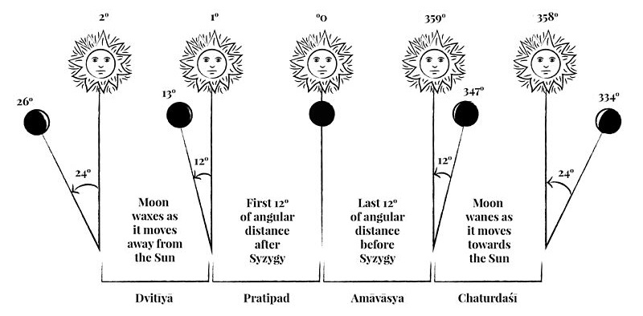

Baixe Planners Prontos
Planners em pdf já prontos para imprimir
O calendário védico vaishnava é repleto de eventos e festividades que são oportunidades para honrar e agradecer o advento de Krishna e seus devotos neste mundo para nos beneficiar com histórias, ensinamentos e práticas que purificam nossa existência e elevam nossa devoção e espiritualidade. Srila Prabhupada certa vez escreveu a um discípulo: “Há tantos festivais que eu posso dar a você um para cada dia.”
Estas festividades, celebrações e eventos seguem o calendário lunar. Sua observância é chamada de "a mãe da devoção” porque nutrem nossa Bhakti.
Os dias santos mais importantes para os praticantes de Bhakti são:
Janmashtami, o dia do advento ou aparecimento de Krishna (ao contrário de nós, almas comuns, Krishna e Seus grandes devotos nascem e morrem de acordo com sua própria vontade. Portanto, seu aparente nascimento e morte são geralmente referidos como aparecimento e desaparecimento.)
Radhashtami, dia do aparecimento de Srimat Radharani
Gaura Purnima, dia do aparecimento de Sri Chaitanya Mahaprabhu
Dias de aparecimento e desaparecimento das encarnações (avatars) de Krishna
Dias comemorando certas atividades executadas por Krishna, tais como Govardhana Puja e Ratha-yatra
Dias de aparecimento e desaparecimento de devotos puros
Ekadashi, o 11º dia da lua minguante e crescente, um dia indicado para aumentar o ouvir, falar e cantar sobre Krishna
Para alguns dias santos, os grandes mestres da tradição Bhakti recomendaram jejum como uma ajuda para fixar a mente em Krishna e lembrar a natureza espiritual do dia. Por exemplo, em Ekadashi, os devotos de Krishna se abstêm de comer feijões e grãos. Para Janmashtami, o aniversário de Krishna, os devotos jejuam até meia-noite.
Além de quebrar o jejum com banquetes, os festivais geralmente incluem palestras e peças de teatro especialmente adequadas à ocasião, bem como grandes celebrações para Krishna e Seus devotos.
Da perspectiva de um observador na Terra, o sol, a lua e as estrelas estão se movendo ao redor da Terra todos os dias. Se olharmos para o céu à noite, à medida que as horas passam, veremos a lua e as estrelas gradualmente se movendo para o oeste no céu, parecendo se mover juntas. Porém, com o passar das horas e ao longo de várias noites, podemos notar que a posição da lua em relação às estrelas se move em direção ao leste.
A extensão desse movimento relativo é de aproximadamente 13 graus por dia. Assim, a lua completará uma rotação completa através do cinturão de estrelas, chamado zodíaco, em cerca de um mês.
Uma situação semelhante ocorre com o sol. Como as estrelas são fracas demais para serem vistas durante o dia, não podemos ver o sol e as estrelas simultaneamente. Mas, se pudéssemos, veríamos o sol se movendo gradualmente contra o fundo das estrelas.
O sol, no entanto, se move mais lentamente que a lua - apenas cerca de 1 grau por dia. Portanto, teríamos que esperar mais para observar a diferença. Para que o sol volte ao mesmo grupo de estrelas no zodíaco, leva um ano.
Pode-se definir um mês e um ano de duas maneiras básicas: pelo movimento da lua e pelo movimento do sol.
O mês solar védico dura o tempo que leva o sol para atravessar um signo completo do zodíaco. O zodíaco tem doze signos, então cada signo cobre um ângulo de 30 graus. Como o sol se move pelo zodíaco cerca de 1 grau por dia, atravessar um signo completo leva cerca de 30 dias - mais exatamente, 30,4 dias. Doze meses geram um ano solar - ou seja, um pouco mais de 365 dias. Em outras palavras, um ano solar é o tempo que leva para o sol começar de qualquer grupo de estrelas e retornar a ele. Esse ano permanece sincronizado com as estações do ano.
O mês e o ano lunares são um pouco mais complexos. O calendário védico define o mês lunar em termos das fases da lua. Sabemos que as fases da lua mudam. Às vezes a lua está cheia, às vezes pela metade (crescente/minguante) e às vezes nova, dependendo do quanto da lua nós aqui na terra podemos ver iluminado pelo sol. Quando o sol e a lua estão próximos um do outro no zodíaco, o lado da lua iluminado pelo sol estará, na maior parte, de costas para nós. Então, veremos apenas uma lasca, e a maior parte da lua parecerá escura. Por outro lado, quando o sol e a lua estiverem em lados opostos do zodíaco, o lado da lua que vemos da Terra ficará totalmente iluminado, e assim veremos a lua cheia. Todas as outras posições do sol e da lua resultam nas outras fases lunares intermediárias.
No calendário Vaisnava, um mês começa no dia seguinte à lua cheia e continua até a próxima lua cheia. Isso leva cerca de 29,5 dias.
Assim como 12 meses solares produzem um ano solar, 12 meses lunares produzem um ano lunar. Como um mês lunar leva 29,5 dias, 12 meses levarão cerca de 12 vezes esse tempo - ou seja, 354 dias.
Este ano lunar é 11 dias mais curto que o ano solar de 365 dias. Portanto, embora o mês seja sincronizado com as fases lunares, o ano não se sincroniza com as estações. Contando pelo calendário solar, em cada ano solar o ano lunar começará 11 dias mais cedo. Portanto, para sincronizar o ano lunar com as estações, o calendário védico acrescenta um mês extra aproximadamente a cada três anos, de acordo com certas regras. Dessa maneira, os anos lunar e solar permanecem sincronizados.
O calendário védico é chamado Pancanga. A palavra Pancanga indica que o calendário consiste em cinco partes, ou conta sobre cinco elementos. Esses elementos são vara (o dia da semana), tithi (o dia lunar ou fase da lua), karana (meio tithi), naksatra (a posição da lua no zodíaco) e yoga (uma medida derivada das posições do sol e da lua). Para o uso normal do calendário, não é necessário entender todos esses elementos. Mas alguns deles são descritos a seguir.
Como discutimos, o mês lunar marca o tempo de uma lua cheia para a próxima. O mês lunar é dividido em 30 partes, chamadas dias lunares, ou tithis. Os tithis são simplesmente as diferentes fases da lua. Assim, o primeiro tithi começa no momento em que a lua está cheia - ou seja, quando o ângulo entre a lua e o sol é de 180 graus - e continua até que o ângulo tenha aumentado 12 graus. Então, um tanto da lua nos parece menos brilhante: a lua não está mais completamente cheia.
Agora, o segundo tithi começa, e continua até que o ângulo entre o sol e a lua tenha aumentado em mais 12 graus. Um pouco mais do lado brilhante da lua tem agora voltado suas costas para nós, e assim a lua é ainda menos cheia.

Quando se passam 15 desses tithis, o ângulo entre o sol e a lua tem aumentado em 180 graus. Neste momento, nada do lado brilhante da lua pode mais ser visto, e assim temos uma lua nova.
Então mais 15 tithis gradualmente se passam, e a lua novamente torna-se cheia. Quando 30 tithis assim se sucedem, o mês acaba.
O período em que a lua míngua, ou diminui de tamanho, é chamado krsna paksa ("a quinzena escura"), e o período em que cresce, ou aumenta, é chamado sukla paksa ou gaura paksa ("a quinzena brilhante"). As palavras Krishna e Gaura usadas aqui são específicas da tradição Gaudiya Vaisnava.
Alguns calendários lunares começam o mês a partir da posição 0 grau - ou seja, logo após a lua nova. Tais calendários são chamados mukhya candra. Outros calendários, tais como o usado pelos Gaudiya Vaisnavas, começam logo após a lua cheia, com o Krsna paksa. Tais calendários são chamados gauna candra.
Exceto para a lua nova e lua cheia, os nomes dos tithis são simplesmente números ordinais: pratipat, dvitiya, trtiya (primeiro, segundo, terceiro), etc. Estes nomes são os mesmos tanto para os tithis que ocorrem durante Krishna paksa (quinzena escura da lua) e o Gaura paksa (quinzena clara). A lua nova é chamada amavasya, e a lua cheia é chamada purnima.
| Krsna paksa | Gaura paksa | ||
|---|---|---|---|
| Tithi | Nome | Tithi | Nome |
| 01 | Pratipat | 01 | Pratipat |
| 02 | Dvitiya | 02 | Dvitiya |
| 03 | Trtiya | 03 | Trtiya |
| 04 | Caturthi | 04 | Caturthi |
| 05 | Pancami | 05 | Pancami |
| 06 | Sasti | 06 | Sasti |
| 07 | Saptami | 07 | Saptami |
| 08 | Astami | 08 | Astami |
| 09 | Navami | 09 | Navami |
| 10 | Dasami | 10 | Dasami |
| 11 | Ekadasi | 11 | Ekadasi |
| 12 | Dvadasi | 12 | Dvadasi |
| 13 | Trayodasi | 13 | Trayodasi |
| 14 | Caturdasi | 14 | Caturdasi |
| 15 | Amavasya (lua nova) | 15 | Purnima (lua cheia) |
Porque a velocidade da Lua em relação à do Sol não é constante, mas varia, um tithi não tem uma duração fixa de tempo. A duração de um tithi pode variar de 19 a 26 horas. Portanto, uma vez que um tithi lunar não corresponde ao dia solar de 24 horas, um tithi pode começar em qualquer momento do dia.
Há certos tithis em que os seguidores da cultura védica observam certos costumes ou celebrações. Em que dia este ou aquele tithi deve ser observado? A regra geral é que se vai celebrar um certo tithi no dia cujo nascer do sol cai dentro daquele tithi - embora, algumas vezes, outras regras entrem em vigor.
O Ekadasi tithi é especialmente importante, e regras especiais determinam quando observar Ekadasi. Às vezes, regras especiais também se aplicam a festivais tais como Sri Krsna Janmastami.
Como mencionado anteriormente, no céu o cinturão de estrelas chamado zodíaco é dividido em 12 signos, que cobrem 30 graus cada. Há também uma maneira de dividir o zodíaco em 27 partes, que cobrem 13 graus e 1/3 cada (13º20' de arco), contados a partir do ponto inicail fixo. Essas partes são chamadas naksatras.
Enquanto se move ao longo do zodíaco, a lua passa continuamente por esses naksatras (casas ou mansões lunares), um por um. No calendário védico, naksatra simplesmente se refere ao naksatra dentro do qual a lua está presente ao nascer do sol de qualquer dia em particular.
As 27 Nakṣatras - mansões lunares ou constelações:
| No. | Nome | Nome Sânscrito | Regente |
|---|---|---|---|
| 01 | Ashvinī | अश्विनी | Ketu |
| 02 | Bharanī | भरणी | Vênus |
| 03 | Kṛttikā | कृत्तिका | Sol |
| 04 | Rohiṇī | रोहिणी | Lua |
| 05 | Mrigashīrsha | म्रृगशीर्षा | Marte |
| 06 | Ārdrā | आर्द्रा | Rahu |
| 07 | Punarvasu | पुनर्वसु | Júpiter |
| 08 | Puṣyā | पुष्य | Saturno |
| 09 | Āshleshā | आश्ळेषा/आश्लेषा | Mercúrio |
| 10 | Maghā | मघा | Ketu |
| 11 | Pūrva-Phalgunī | पूर्व फाल्गुनी | Vênus |
| 12 | Uttara-Phalgunī | उत्तर फाल्गुनी | Sol |
| 13 | Hasta | हस्त | Lua |
| 14 | Chitrā | चित्रा | Marte |
| 15 | Svātī | स्वाति | Rahu |
| 16 | Viśākhā | विशाखा | Júpiter |
| 17 | Anurādhā | अनुराधा | Saturno |
| 18 | Jyeshtha | ज्येष्ठा | Mercúrio |
| 19 | Mūla | मूल | Ketu |
| 20 | Pūrvāṣāḍhā | पूर्वाषाढा | Vênus |
| 21 | Uttarāṣāḍhā | उत्तराषाढा | Sol |
| 22 | Śravaṇa | श्रवण | Lua |
| 23 | Shravishthā/Dhanishthā | श्रविष्ठा/ धनिष्ठा | Marte |
| 24 | Shatabhishā | शतभिषा | Rahu |
| 25 | Pūrva-Bhādrapadā | पूर्व भाद्रपदा | Júpiter |
| 26 | Uttara-Bhādrapadā | उत्तर भाद्रपदा | Saturno |
| 27 | Revatī | रेवती | Mercúrio |
As 27 Nakshatras (asterismos) são usadas para rastrear o curso da lua contra o fundo de estrelas fixa no decorrer do ano. Um prognóstico baseado no trânsito/correlação/inter-relação de planetas em relação aos Nakshatras é mais preciso do que os baseados em qualquer sistema ocidental de astrologia.
Tithis e naksatras podem ser facilmente entendidos em relação a fenômenos no céu. Tithi é a fase da lua, e naksatra marca a posição da lua. Mas yoga não é facilmente entendido de maneira similar. O yoga é determinado pela adição do ângulo ou longitude do sol e da lua, reduzindo a soma para caber no círculo de 360 graus (subtraindo 360 graus, se necessário) e dividindo o número resultante por 13 graus e 1/3. Como os naksatras, os yogas também são em número de 27.
Os 27 Yogas:
| No. | Nome | Tradução | Características |
|---|---|---|---|
| 01 | Vishkumbha | Apoiado | Prevalece sobre os outros, vitorioso sobre os inimigos, obtém propriedade, rico. |
| 02 | Priti | Carinho | Popular, atraído pelo sexo oposto, goza a vida com satisfação. |
| 03 | Ayushman | Vida longa | Boa saúde e longevidade, energética. |
| 04 | Saubhagya | Boa Fortuna | Desfruta de uma vida confortável, cheia de oportunidades, feliz. |
| 05 | Shobhana | Esplendor | Corpo brilhante e comportamento sensualista, obcecado por sexo. |
| 06 | Atiganda | Perigo ou obstáculo | Vida difícil devido a inúmeros obstáculos e acidentes; vingativo e com raiva. |
| 07 | Sukarma | Virtuoso | Realiza atos nobres, magnânimos e caridosos, rico. |
| 08 | Dhriti | Determinação | Desfruta da riqueza, bens e cônjuges de outros; se entrega à hospitalidade de outras pessoas. |
| 09 | Shoola | Lança, Dor | Confrontador e contrário, briguento, zangado. |
| 10 | Ganda | Perigo ou obstáculo | Falhas morais ou éticas, personalidade problemática. |
| 11 | Vriddhi | Crescimento | Inteligente, oportunista e exigente; a vida melhora constantemente com a idade. |
| 12 | Dhruva | Constante | Caráter estável, capaz de se concentrar e persistir, rico. |
| 13 | Vyaghata | Violento | Cruel, com a intenção de prejudicar os outros. |
| 14 | Harshana | Emocionante | Inteligente, deleita-se com alegria e humor. |
| 15 | Vajra | Diamante, Raio | Rico, lascivo, imprevisível, enérgico. |
| 16 | Siddhi | Sucesso | Hábil e realizado em várias áreas; protetor e apoiante de terceiros. |
| 17 | Vyatipata | Calamidade | Propenso a percalços repentinos e reversões, inconstante e não confiável. |
| 18 | Variyana | Conforto | Adora facilidade e luxo, preguiçoso, lascivo. |
| 19 | Parigha | Obstrução | Encontra muitos obstáculos ao progresso na vida; irritável e intrometido. |
| 20 | Shiva | Auspicioso | Honrado pelos superiores e pelo governo, plácido, erudito e religioso, rico. |
| 21 | Siddha | Realizado | Personalidade acolhedora, natureza agradável, interesse em ritual e espiritualidade. |
| 22 | Sadhya | Dócil | Bem comportado, boas maneiras e etiqueta. |
| 23 | Shubha | Auspicioso | Corpo e personalidade brilhantes, mas com problemas de saúde; rico, irritável. |
| 24 | Shukla | Branco, brilhante | Tagarela e volúvel, impaciente e impulsivo; mente instável e mutável. |
| 25 | Brahma | Sacerdote, Deus | confiável e confidencial, ambicioso, bom discernimento e julgamento. |
| 26 | Indra | Chefe | Interesse em educação e conhecimento; útil, abastado. |
| 27 | Vaidhriti | Pouco apoiado | Natureza crítica e planejadora; poderoso e avassalador mental ou fisicamente. |
No calendário Vaisnava, os tempos para várias celebrações são determinados pelos tithi, às vezes com naksatra e outros elementos do calendário levados em consideração.
A maioria dos estudiosos que analisaram os antigos sistemas de calendário indianos, lunares e solares, concluíram que o sistema lunar é o mais antigo.
Sabe-se que as fases lunares influenciam a agricultura e, de acordo com escrituras como Manu-samhita (A Lei de Manu), elas também influenciam aspectos mais sutis da vida humana.
Tradicionalmente, os cálculos astronômicos necessários para fazer um Pancanga eram feitos de acordo com um dos textos astronômicos, como por exemplo o Surya Siddhanta. Os métodos descritos no Surya Siddhanta são bastante semelhantes aos métodos astronômicos modernos para determinar as posições dos planetas. A principal diferença é que Surya Siddhanta tem um modelo mais simples. Tal modelo é necessário para que os cálculos sejam feitos à mão de maneira prática.
Os métodos de Surya Siddhanta podem ser usados por uma pessoa habilidosa a qualquer momento, sem a necessidade de equipamentos modernos. Tudo o que era necessário eram alguns instrumentos de observação que podiam ser construídos sem alta tecnologia. Esses instrumentos eram utilizados regularmente para verificar se os cálculos eram compatíveis com a realidade observável. Quando uma diferença aparecia após algum tempo, eram feitas correções nas constantes astronômicas das fórmulas. Com esse sistema foram obtidos resultados razoavelmente bons, embora o modelo astronômico fosse simples. Sua precisão não pode ser comparada à obtida pelos métodos modernos mas, para os propósitos da astrologia e criação de calendários, era suficiente.
Com programas de computador tais como o VCal 4.01 (anterior) ou o GCal 11.2c (ou suas versões mais recentes para aplicativos Androide e IOS) a precisão alcançada é maior que 1 minuto de arco para a longitude do sol e 2 minutos de arco para a longitude da lua. Essas precisões elevadas permitem calcular, por exemplo, os horários de término de tithis com erro máximo de 5 minutos (erro médio de 3 minutos ou menos), o que ocasionaria a indicação de um Ekadasi (o décimo primeiro tithi) na data errada aproximadamente uma vez a cada 20 anos.
Tais programas foram desenvolvidos especificamente para a ISKCON, a Sociedade Internacional para a Consciência de Krishna, que segue a tradição Gaudiya Vaisnava. Mas os calendários produzidos por eles podem ser úteis para a maioria das pessoas que seguem um calendário lunar védico.
O program pioneiro, o VCAL - Vaishnava Calendar - foi escrito por Syamasundara Dasa e aperfeiçoado mais tarde por ele juntamente com Markandeya Rsi Dasa. Para desenvolver o programa, em junho de 1989 Markandeya foi à Índia para extensa pesquisa e consulta com pessoas conhecedoras de criação de calendário, astronomia e observâncias de eventos e celebrações Vaisnavas. O aprendizado e a experiência dos consultados contribuíram muito para a confiabilidade do programa.
Nos anos 2000, o GBC – Governing Body Commission (Conselho Governamental da ISKCON) promoveu a atualização tecnológica do cálculo do caléndário védico vaishnava, tendo o programa oficial atual, o GCal - Gaurabda Calendar, sido desenvolvido por Gopalapriya Das da ISKCON Bratislava, Eslováquia, juntamente com Bhanu Swami, Sadasivananda Das e Bhaktarupa Das.
Atualmente, é possível encontrar aplicativos para smartfone com o calendário vaishnava, tal como o excelente Vaishnava Calendar for ISKCON and Gaudiya devotees, de Abhay Charan das, e calendários on-line tais como o disponível em vaisnavacalendar.com.
O Sistema Gerador em Excel do Planner GPlan utiliza o GCal 11.2c.
Seguindo a tradição Gaudiya Vaisnava, os anos são contados a partir do aparecimento da encarnação do Senhor Sri Krsna como Senhor Sri Caitanya Mahaprabhu. O Senhor Caitanya também é conhecido como Gaura, então o ano é chamado "Gaurabda", "o ano do Senhor Caitanya".
Cada mês lunar, ou "masa", é conhecido pelo nome de Visnu. Os meses, os nomes sânscritos pelos quais são comumente conhecidos na Índia, e seus equivalentes aproximados de acordo com o calendário gregoriano, vão listados a seguir:
| No. | Nome de Vishnu | Nome Sânscrito | Equivalência |
|---|---|---|---|
| 01 | Viṣṇu | Chaitra - चैत्र | Março-Abril |
| 02 | Madhusudana | Vaiśākha - वैशाख | Abril–Maio |
| 03 | Trivikrama | Jyeṣṭa - ज्येष्ठ | Maio–Junho |
| 04 | Vāmana | Āṣāḍha - आषाढ | Junnho–Julho |
| 05 | Śrīdhara | Śrāvaṇa - श्रावण | Julho-Agosto |
| 06 | Hṛṣīkeśa | Bhādrapada - भाद्रपद | Agosto–Setembro |
| 07 | Padmanābha | Āśvina - अश्विन् | Setembro–Outubro |
| 08 | Dāmodara | Kārtika - कार्तिक | Outubro–Novembro |
| 09 | Keśava | Mārgaśīrṣa (Agrahāyaṇa) - मार्गशीर्ष | Novembro–Dezembro |
| 10 | Nārāyaṇa | Pauṣa - पौष | Dezembro–Janeiro |
| 11 | Mādhāva | Māgha - माघ | Janeiro–Fevereiro |
| 12 | Govinda | Phālguna - फाल्गुन | Fevereiro–Março |
| Puruṣottama month | Adhika month - अधिक - ou Dvitiya Jyestha | mês intercalar (mês bissexto) |
Ekadasi, o décimo primeiro tithi, tem importância especial. Na escritura Caitanya-caritamrta (Madhya-lila, capítulo 24), o Senhor Caitanya Mahaprabhu instrui Sanatana Gosvami a respeito dos princípios regulativos Vaisnavas. No texto 342, o Senhor Caitanya diz:
"Você deve recomendar que evite-se jejuar no Ekadasi misto [viddha] e, ao invés, que se jejue no Ekadasi puro. Você deve também descrever a falha em não observar isso. Deve-se ter muito cuidado no que diz respeito a esses itens. Se alguém não for cuidadoso, será negligente na execução do serviço devocional".
Conforme descrito no livro Hari Bhakti Vilasa, Ekadasi viddha (misto) ocorre quando o décimo primeiro tithi começa antes do nascer do sol, mas o décimo tithi ainda preside o início do brahma muhurta (o período auspicioso que começa uma hora e meia antes do nascer do sol).
É tradicional jejuar no Ekadasi. Mas sob certas condições, chamadas mahadvadasi, não se jejua no Ekadasi, mas no dia seguinte, no dvadasi, mesmo que o Ekadasi seja suddha, ou puro, e não viddha, ou misto. Existem oito mahadvadasis.
Os calendários produzidos por este programa facilitam ver quando observar Ekadasi. O jejum de Ekadasi deve ser observado no dia chamado suddha (puro) Ekadasi, ou alternativamente em Mahadvadasi, mesmo que o dia anterior seja chamado Ekadasi. Tudo isso é esclarecido pelo asterisco (*), que indica um jejum, na margem direita do calendário.
Para completar a devida observância de Ekadasi, na manhã seguinte deve-se terminar o jejum após o primeiro horário indicado no calendário e antes do segundo horário. O calendário indica esses horários de acordo com o horário padrão da localidade para a qual o calendário foi feito.
Durante o verão, muitos locais não seguem o horário padrão, ao invés adiantam seus relógios uma hora (ou às vezes mais) para aproveitar melhor as horas de luz do dia. Por exemplo, 5 horas da manhã tornan-se 6 horas. O programa do Calendário Védico não leva em consideração esse horário de verão. Portanto, nos dias em que seu local usa horário de verão, você deve ajustar os horários indicados pelo calendário. Geralmente, isso significa que, quando o horário de verão estiver em vigor, você deverá adicionar uma hora aos horários indicados.
Ao estudar o calendário, você pode achar que algumas vezes um tithi é pulado e, outras vezes, um tithi ocorre em dois dias consecutivos. Não há nada de errado com isso. Para cada dia, o calendário mostra apenas qual tithi (fase da lua) prevalece na hora do nascer do sol. Às vezes, uma determinada fase lunar (tithi) pode começar após um nascer do sol e terminar antes do próximo, e, portanto, no calendário este tithi parece faltando. Ou, às vezes, uma fase lunar (tithi) se estende por dois nasceres do sol seguidos e, portanto, esse tithi aparece duas vezes.
O aniversário de uma pessoa é determinado pelo tithi prevalecente no momento em que ela nasceu. Nos anos subsequentes, o dia para comemorar como aniversário deve ser o dia em que o nascer do sol ocorre durante o mesmo tithi. Se o tithi prevalecer em dois nasceres do sol consecutivos, o nascer do sol que tem o mesmo naksatra que no nascimento será o dia apropriado para a celebração. Se nenhum nascer do sol ocorrer com esse naksatra, o último dos dois dias deve ser escolhido. Se não houver dia em que o nascer do sol ocorra durante esse tithi em particular, então o dia dentro do qual o tithi ocorre deve ser escolhido como o dia da celebração.
Suponha, por exemplo, que o dia do aparecimento de uma pessoa seja comemorado em dvitiya tithi no mês de Kesava e que, para o mês de Kesava, o calendário lista dois dvitiya tithis, um após o outro. E suponha que o naksatra que prevaleceu no nascimento não esteja presente. Então o segundo dvitiya deve ser escolhido como o dia da celebração. Se o calendário não mostrar dvitiya, o dia do aparecimento deve ser comemorado no dia listado como pratipat, porque a fase (tithi) dvitiya da lua ocorrerá durante esse dia.
Sankranti significa o momento em que o sol entra em um signo do zodíaco. Se você conhece a astrologia, pode se perguntar por que o calendário mostra o sol entrando nos vários signos do zodíaco em dia e hora diferentes daqueles dados na astrologia ocidental. Essa é uma das diferenças entre os dois tipos de astrologia, Ocidental e Védica. A diferença refere-se a um certo ângulo chamado ayanamsa, que atualmente está em torno de 23 graus. A explicação do ayanamsa pode ser encontrada em livros sobre Astrologia Védica.
Aqui estão os nomes sânscritos para os signos do zodíaco, juntamente com os seus homólogos em português.
| No. | Devanagari | Sânscrito | Português |
|---|---|---|---|
| 01 | मेष | Meṣa | Áries |
| 02 | वृषभ | Vṛṣabha | Touro |
| 03 | मिथुन | Mithuna | Gêmeos |
| 04 | कर्कट | Karkaṭa | Câncer |
| 05 | सिंह | Siṃha | Leão |
| 06 | कन्या | Kanyā | Virgem |
| 07 | तुला | Tulā | Libra |
| 08 | वृश्चिक | Vṛścika | Escorpião |
| 09 | धनुष | Dhanus | Sagitário |
| 10 | मकर | Makara | Capricórnio |
| 11 | कुम्भ | Kumbha | Aquário |
| 12 | मीन | Mīna | Peixes |
Baseado nas explanações compiladas por Krishna-priya Devi Dasi
(Vaisnava Academy for Girls, Alachua, Florida, USA)
Aqui estão breves dados sobre festivais, votos (vratas) e outros eventos (listados alfabeticamente) observados no calendário vaisnava.
Nota: O calendário vaishnava usa o termo "aparecimento" para denotar o nascimento destas grandes almas e encarnações e o termo "desaparecimento" para denotar sua partida deste mundo. Descrições mais completas serão encontradas nos livros de Sua Divina Graça A. C. Bhaktivedanta Swami Prabhupada, especialmente o Sri Caitanya-caritamrta.
Bahulastami -- dia de aparecimento do Radha-kunda e Syama-kunda, lagos sagrados que são lugares de banho de Srimati Radharani e do Senhor Krishna em Vrndavana.
Balarama Rasayatra -- dança da rasa da primavera do Senhor Balarama com Suas namoradas vaqueirinhas.
Bali Daityaraja Puja -- festival que comemora a rendição de Bali Maharaja ao Senhor Vamanadeva, a encarnação de anão do Senhor Krsna. Uma Deidade de Vamana é adorada.
Bhismastami -- aniversário de aparecimento de Bhismadeva, o "avô" dos Pandavas.
Bhisma Pancaka -- é um período de cinco días para se realizar austeridades. Começa no último Ekadasi do mês de Kartika (Haribodhini ou Utthana Ekadasi) e termina no Purnima. O Senhor Krsna em pessoa deu estes cinco días a Bhismadeva dizendo: ?O serviço devocional puro a Mim, é facilmente obtido por se seguir este voto em Mathura-Vrndavana durante Kartika?. Deve-se começar o jejum em Haribodhini Ekadasi, lembrando-se de Sri Bhismadeva, jejuar de todos os grãos e feijões, comer somente uma vez por dia frutas e vegetais (depois do pôr-do-Sol). Se possível, jejuar por completo durante os cinco dias é uma grande austeridade. Durante todo o período do jejum, o devoto deve cantar constantemente os santos nomes de Krishna, adorar Radha e Krishna e os vaihsnavas e dar caridade aos templos e vaishnavas dignos.
Candana Yatra -- é um festival durante a estação quente da Índia, no qual as Deidades são cobertas com pasta de sândalo (candana) para refrescá-Las. (Geralmente, isso não é prático no Ocidente, onde é frio durante essa época do ano.)
Caturmasya -- é um período de quatro (catur) meses (masya) durante o qual chove muito na Índia e os sábios param de viajar e se recolhem para fazer austeridades. Na ISKCON ele é observado principalmente fazendo-se os jejuns específicos. Consultar o Sri Caitanya-Caritamrta, Madhya-lila, volume I, pág. 334. Caturmasya não é opcional para vaisnavas.
Primeiro mês de Caturmasya - jejum de vegetais de folhas verdes frondosas, por um mês.
Segundo mês de Caturmasya - jejum de yogurte por um mês.
Terceiro mes de Caturmasya - Jejum de leite por um mês.
Quarto mês Caturmasya - jejum de urad dahl, lentilha, por um mês.
Damodara Masa -- o mês de Damodara. Ao longo deste mês, os devotos comemoram o passatempo do travesso Senhor Krsna sendo amarrado com cordas por mãe Yasoda. Os devotos oferecem pequenas lâmpadas de ghi todos os dias ao Senhor Damodara (Krsna).
Dipa-dan, Dipavali, ou Diwali (Festival das luzes) (e Kalipuja) -- comemoração do retorno do Senhor Rama do exílio para Ayodhya, Sua capital, após a derrota do demônio Ravana. (Vaishnavas não observam regularmente Kalipuja, a adoração a Durga Devi.)
Ekadasi -- é o décimo primeiro dia lunar (tithi) das quinzenas brilhante (shukla paksha) ou escura (krishna paksha) de cada mês lunar (masa) do Calendário Védico (também chamado Panchang). Nestes dias se observa jejum completo de grãos, feijões, cereais e derivados.
Ganga Puja -- aniversário de aparecimento de Ganga Devi, a semideusa do rio Ganges.
Ganga Sagara Mela -- festival observado especialmente na confluência do Ganges com a baía da Bengala. Kapilasrama, o asrama da encarnação do Senhor Krsna como Kapiladeva, o filho de Devahuti, está situado neste lugar. O festival comemora a trazida do rio Ganges pelo rei Bhagirathi dos planetas celestiais para o oceano e os planetas inferiores.
Gaura Purnima -- aniversário de aparecimento do Senhor Sri Caitanya Mahaprabhu, que é o mesmo Krishna no papel de Seu próprio devoto. Ele aparece neste mundo para difundir o amor a Krishna através do canto congregacional de Seus santos nomes. Ele apareceu em Sridhama Mayapur, Bengala Ocidental, em 1486. Suas atividades e ensinamentos estão descritos em detalhes no livro "Ensinamentos do Senhor Caitanya" e no "Sri Caitanya-Caritamrta". (Veja também o Srimad-Bhagavatam 11.5.32)
Gopastami, ou Gosthastami -- após haver previamente pastoreado os bezerros, neste dia Krishna saiu para pastorear as vacas pela primeira vez. Assim Ele se tornou um gopa, um vaqueiro. Neste dia as gosalas (currais para vacas) são limpas, as vacas são adoradas e prasada (comida santificada) é oferecida a elas pelos devotos.
Govardhana Puja (adoração à Colina de Govardhana) -- festival que comemora a adoração da colina de Govardhana pelos residentes de Vrndavana e o levantamento da colina pelo Senhor Krsna.
Go Puja (ou Go-krda) -- neste dia, de acordo com o Hari-Bhakti-Vilasa, deve-se decorar as vacas e os touros, fazê-los correr, e fazer com que os touros arem o campo.
Gundica Marjana -- limpeza do templo de Gundica em Jagannatha Puri, Índia.
Guru (Vyasa) Purnima -- aniversário de aparecimento de Srila Vyasadeva, o compilador da literatura Védica.
Hera Pancami -- é um festival realizado três dias após o Ratha Yatra para celebrar a visita de Srimati Rukmini Devi a Vrndavana para levar o Senhor Krsna de volta a Dvaraka. (Veja o Sri Caitanya-Caritamrta, Antya-lila, volume I, páginas 770 e 771)
Jagaddhatri Puja -- dia do festival de uma forma de Mahamaya ou Durga chamada Jagaddhatri, "a mantenedora do mundo material". Esse festival é predominantemente comemorado na Bengala. (os vaishnavas geralmente não observam este festival)
Jagannatha Misra Festival -- dia em que o pai do Senhor Caitanya Mahaprabhu (Jagannatha Misra) fez as celebrações do aparecimento dEle.
Jahnu Saptami -- dia em que o sábio Jahnu liberou o rio Ganges depois de tê-lo engolido. Neste dia, se possível, deve-se adorar o Ganges e tomar banho em suas águas.
Katyayani vrata -- um voto de um mês (vaisnava) para observar austeridades para agradar Katyayani Devi, ou Yogamaya Devi, a energia espiritual do Senhor Krishna.
Krishna Janmastami -- o aniversário de aparecimento do Senhor Sri Krishna, a Suprema Personalidade de Deus.
Krishna Phula Dola, Salila Vihara -- festival de barco de verão para as Deidades de Sri Sri Radha-Krsna.
Krishna Pusya abhiseka -- durante o puja (adoração) matinal a Deidade ou uma salagrama é banhada em puro ghi. Srila Prabhupada uma vez explicou o festival dessa maneira: "Krishna era só um brinquedo nas mãos das gopis, então um dia as gopis decidiram que 'Nós vamos decorá-lO'. Pusyabhisheka quer dizer uma cerimônia para decorar com abundância a Deidade com flores, ornamentos, tecidos etc. Depois disso deve haver uma procissão pelas ruas, de forma que todos os cidadãos vejam quão belo Krishna se apresenta."
Krsna Rasayatra -- dança da rasa do Senhor Krishna com as gopis.
Krishna Saradiya Rasayatra -- dança da rasa de outono do Senhor Krishna com Suas namoradas.
Krishna Vasanta Rasa -- dança da rasa da primavera do Senhor Krsna.
Laksmi Puja -- adoração a Laksmi Devi, a consorte do Senhor Visnu (não observado por Gaudiya Vaisnavas).
Lalita sasti -- dia de aparecimento de Lalita-sakhi, a confidente íntima de Srimati Radharani.
Nandotsava -- festival observado por Nanda Maharaja, o pai do Senhor Krishna, para celebrar Seu aparecimento.
Nrsimha Caturdasi -- aniversário de aparecimento do Senhor Nrsimhadeva, a encarnação do Senhor Krsna metade homem, metade leão.
Odana sasthi -- começo do inverno na Índia. A partir deste dia deve-se oferecer ao Senhor Jagannatha um agasalho de inverno. Segundo o livro de adoração Arcana Marga, deve-se primeiro lavar o tecido para remover toda goma e então se pode utilizá-lo para agasalhar o Senhor. No Brasil esta cerimônia pode ser observada no primeiro dia do inverno, 21 de junho. (Veja o Sri Caitanya-Caritamrta, Madhya-lila, volume II, pág. 805, verso 78)
Panihati Cida Dahi Utsava -- festival de arroz inflado (tipo pipoca) com iogurte de Srila Raghunatha Dasa Gosvami para o Senhor Caitanya e Seus associados. Celebrado especialmente em Panihati, na Bengala Ocidental.
Radhastami -- aniversário de aparecimento de Srimati Radharani,a eterna consorte do Senhor Krishna.
Radha Govinda Jhulana Yatra -- é o festival do balanço de Radha-Krshna. As Deidades Se divertem em um balanço decorado com bastante esmero.
Radha Kunda prakat, Snana Dana -- aniversário de aparecimento de Radha-kunda, o lago onde Srimati Radharani Se banha em Vrndavana. Os devotos tomam banho lá especialmente na meia-noite deste dia.
Radha Ramana Devji - aparecimento -- aparecimento da deidade do Senhor Krishna adorada por Srila Gopala Bhatta Gosvami.
Ramacandra Vijayotsava -- celebração da vitória do Senhor Ramacandra sobre o demônio Ravana. Uma grande imagem de Ravana é ceremoniosamente queimada.
Ratha Yatra -- festival de carros em Jagannatha Puri, Índia, no qual o Senhor Krsna, na forma do Senhor Jagannatha, passeia com o Senhor Balarama e Subhadra Devi. (Hera Pancami depois de 4 dias) (Retorno do Ratha depois de 8 dias)
Salagrama e Tulasi Jala Dana -- durante a estação quente na Índia, uma vasilha de água gotejante é colocada em cima de Tulasi e Salagrama para mantê-los refrescados. (Geralmente, isso não é prático no Ocidente, onde é frio durante essa época do ano.)
Sarasvati Puja -- adoração a deusa Sarasvati. (geralmente não observado por vaishnavas)
Siva Ratri -- adoração ao Senhor Siva. Os devotos podem banhar uma Siva-linga em água e panca-gavya (cinco substâncias da vaca) e oferecer Krsna-prasada ao Senhor Siva. Jejuar é opcional para vaisnavas.
Snana Dana -- aniversário de aparecimento de Radha-kunda, o lago onde Srimati Radharani Se banha em Vrndavana. Os devotos tomam banho lá especialmente na meia-noite deste dia.
Snana Yatra -- neste dia de lua cheia, dezesseis dias lunares antes do Ratha Yatra, o Senhor Jagannatha é banhado. Ele fica doente e Se retira para descansar por quatorze dias. Então um cuidado especial é oferecido a Ele até que Ele saia para o Ratha Yatra.
Srila Prabhupada - Aceitação de sannyasa -- Srila Prabhupada aceitou sannyasa, a ordem renunciada da vida, de Sri Srimad Bhakti Vijnana Kesava Goswami Maharaja em Mathura, Índia, em 1959.
Srila Prabhupada - Partida para os EUA -- neste dia, em 1965, Srila Prabhupada deixou Calcutá a bordo do navio cargueiro a vapor Jaladuta.
Srila Prabhupada - Chegada aos EUA -- Srila Prabhupada chegou em Boston em 17 de setembro de 1965.
Srila Prabhupada - Fundação da ISKCON em Nova York -- Srila Prabhupada fundou a ISKCON, a Sociedade Internacional para a Consciência de Krishna, em 1966.
Srila Prabhupada - Desaparecimento -- Srila Prabhupada deixou este mundo no dia 14 de novembro de 1977, em Vrndavana, Índia. Os devotos observam este aniversário com recordações pessoais de Prabhupada, leituras de sua biografia e assim por diante.
Tulasi-Saligrama Vivaha (casamento) -- casamento de Salagrama e Tulasi Devi.
Vamana Dvadasi -- aniversário de aparecimento do Senhor Vamanadava, a encarnação como brahmana anão do Senhor Krishna.
Vasanta Pancami -- o primeiro dia da primavera. Neste dia, são oferecidas para as Deidades muitas flores, folhas e ramos novos de grama. (Este também é um dos dias mais auspiciosos do ano para cerimônias de casamento.)
Planners em pdf já prontos para imprimir
Sistema gerador em Excel (não precisa saber Excel: é só selecionar os dados do Planner e apertar uns botões)
KrishnaDays - Vaisnava Calendar Information - Site oficial da ISKCON para download do Gaurabda Calendar - GCal - programa para geração de calendários védicos vaishnavas.
Fases e Movimentos Aparentes da Lua
Basics of Panchangam
Krishna.com - Informações sobre autorrealização, compreensão do Divino e espiritualidade, conforme ensinamentos de Krishna encontrados no Bhagavad-gita Como Ele É, e demonstrados por A.C. Bhaktivedanta Swami Prabhupada, acharya-fundador da Sociedade Internacional da Consciência de Krishna - ISKCON.